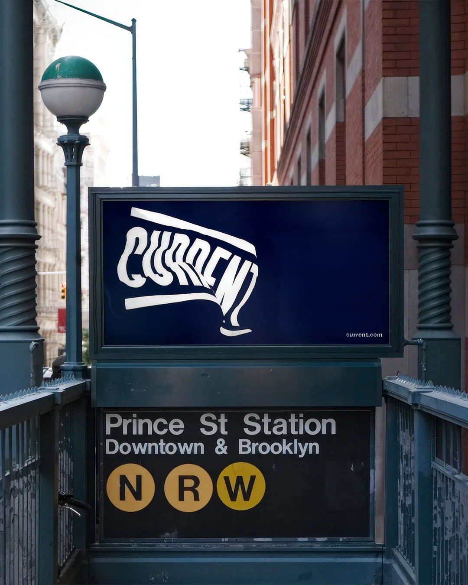
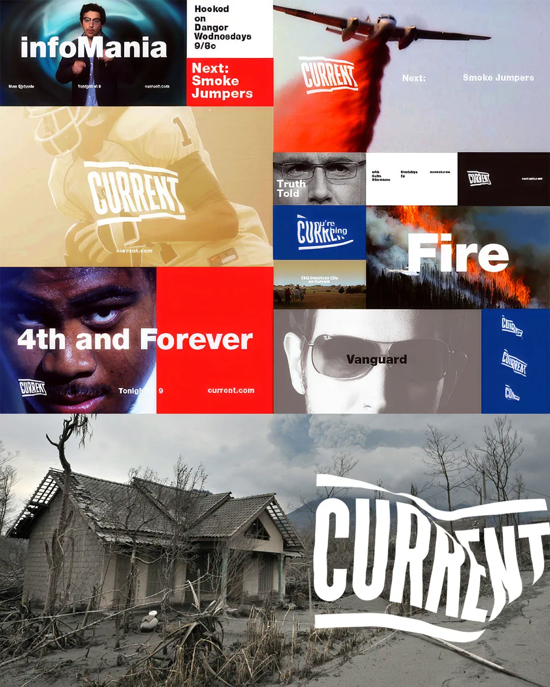
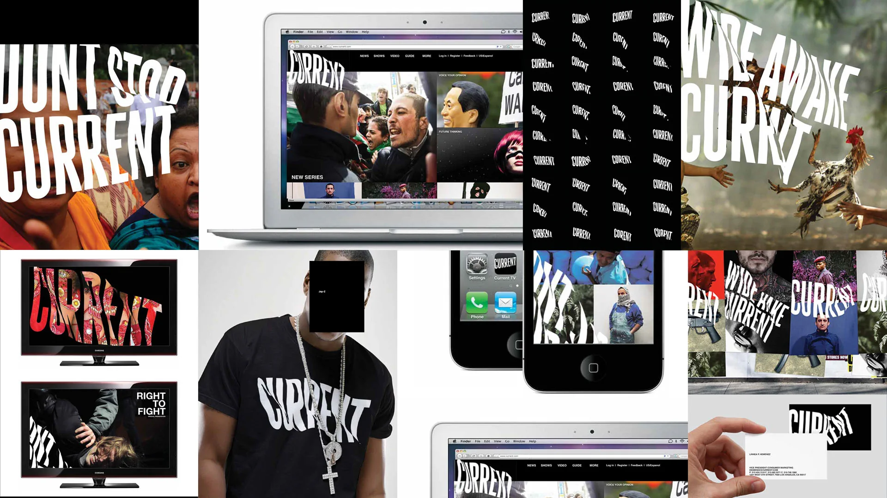

Current TV
“Current TV’s dynamic logo is every bit as revolutionary as the network should’ve been” - Jude Stewart, Fast Company’s Co.Design.
Jordan Crane at Wolff Olins called GRAPHIC HAVOC in when they were beginning to work on the new Current TV identity. In the early meetings GRAPHIC HAVOC helped to mold and develop logo possibilities by testing out different motion experiments and options for multiple concepts. Early on it was obvious the flag captured the existing, and future brand of Current TV.
After exploring many technical and stylistic approaches to achieve the desired look/feel, GH ended up creating simulated virtual flags. These 3D flag animations ultimately became how the primary word mark would move and stills from the animations were used as inspiration and references for the creation of the brands logo/word-mark which was executed by Wolff Olins.
Once the final direction was decided upon by Wolff Olins and the client, GH worked closely with WO on further development of the brand look/feel.
While GRAPHIC HAVOC was creating multiple animations of the flag logo, additional motion design was executed, implementing the overall brand identity and style WO was developing simultaneously. GH helped create a motion style guide for the on-air identity which was then provided to Loyal Kasper for production.
In march of 2012 the work GRAPHIC HAVOC did with Wolff Olins for Current TV was awarded best of the Logo and Identity Animation category in the 2011 Brand New Awards—a judged competition organized by UnderConsideration, celebrating the best identity work produced around the world each year.
2012 D&AD Professional Award Winner in the Graphic Design/Logos category.


